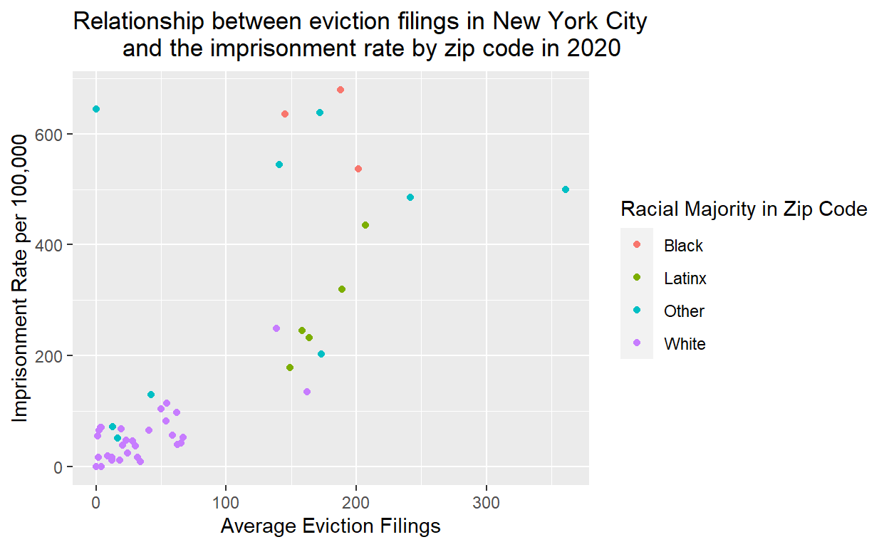
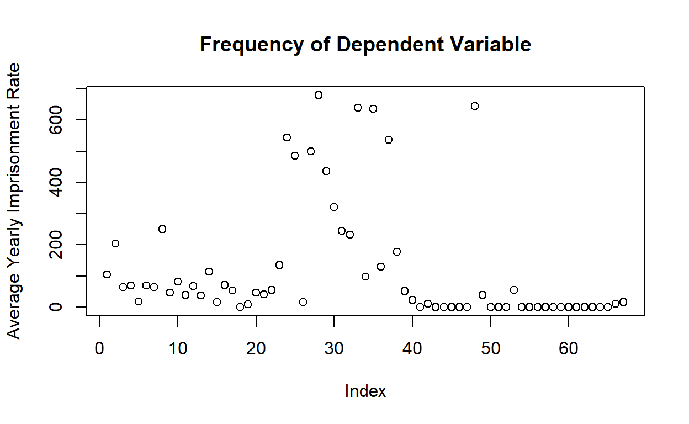

Is there a correlation between eviction rates and incarceration?
The United States has an affordable housing and mass incarceration problem. Sociologist Matthew Desmond, founder of the Eviction Lab at Princeton University, estimated that an eviction is filed every four minutes. According to a 2023 report by the Prison Policy Initiative, the prison population is increasing as pandemic-era reform is retracted. Both crises disproportionately impact marginalized communities, especially poor Latinxs and Black people. Far too little attention has been paid to the relationship between mass incarceration and the eviction crisis in the U.S. despite its devastating effects. Although meaningful research has been conducted on the importance of transitional housing as a prisoner reentry program, there is a general lack of research on the relationship between housing insecurity and incarceration before an individual makes contact with the criminal justice system. Evictions disproportionately impact poor people of color who live in disadvantaged neighborhoods and expose them to the legal system through housing court. Recent scholarship has tried to understand the effects of eviction on families and adults individually. In particular, the work of sociologists Aaron Gottlieb and Jessica Moose has shown that mothers who have been evicted more than two times have a higher chance of experiencing criminal justice involvement and that both recent and less recent evictions are associated with criminal justice involvement (Gottlieb and Moose, 2018). This finding informed the guiding research question for my project: Is there a correlation between eviction and incarceration? In this study, I examine the relationship between eviction rates in a particular zip code in New York City and its corresponding incarceration rate. I hypothesized that the zip codes with the highest eviction filing rates have the highest number of incarcerated people. After running statistical tests, I conclude that there is a statistically significant correlation between eviction rates and incarceration rates in New York City zip codes.
This is an cross-sectional observational study, which means my findings cannot be interpreted causally. The independent variable is the eviction filing rate in 2020. The key dependent variable is the imprisonment rate in 2020.
To determine whether there was an association between eviction rates and incarceration, this study used data provided by the Eviction Lab and Prison Policy Initiative. I used the Eviction Lab’s 2020-2021 data on eviction filings by zip code in New York state. I named this dataset evictions_ny. The Eviction Lab calculated the monthly average eviction filing rate by collecting information from public-facing state court data about each jurisdiction in New York state and created a dataset for analysis. For this study, the jurisdiction of interest was New York City. This dataset was available in a CSV file so it was easily imported.
I also used the Prison Policy Initiative’s 2020 data on incarceration in New York state. I named this dataset nyincarceration. The data in this dataset was collected after New York passed a law that ended prison gerrymandering, requiring redistricting officials to relocate incarcerated people back to their home census-block. This dataset was expertly coded by Peter Horton at Redistricting Data Hub. Prison Policy Initiative published the data as a table, which required me to import the data points into an Excel sheet and convert it to a CSV file in order to run statistical tests.
Before I merged both datasets to find the correlation between my variables, I had to clean the data a bit. The first thing I did was convert the GEOID variable in the eviction dataset from character to numeric because the zip codes in the incarceration dataset were numeric. To focus my study and better manage all the data, I decided to filter the incarceration data to only include data points for New York City instead of the entire state and renamed it to nycincarceration. This reduced my data points from 1,826 zip codes to 69 zip codes. Then, I used the inner_join() function to merge the incarceration dataset with the eviction data by zip codes in NYC. The zip codes in the incarceration data were under a different variable name (“New York Zip Codes”), so I renamed it to match the “GEOID” variable name. Next, I grouped the data by zip code and its corresponding racial majority because I was interested in seeing if race impacted the relationship between eviction and incarceration. Then I used the summarize() function to calculate the average yearly filings (independent variable) and the average yearly imprisonment rate (dependent variable). Lastly, I used the mutate() function to convert the racial_majority variable into a factor. Now that the eviction and incarceration data are compiled into a single dataset, I renamed it to nyc_eviction_imprison. After initial analysis of the data, I made the decision to remove 2 extreme outliers from the dataset so that the relationship could be better seen in the plot. I also decided to change the racial_majority variable name to “Racial Majority in Zip Code” to print out clearer labels.
Using the ggplot package, I created a scatter plot that visualized the relationship between the average yearly eviction filings and the average yearly imprisonment rate. Each dot represents a zip code. The color of each dot indicates what racial group predominantly lives in that zip code.
library(dplyr)
library(ggplot2)
evictions_ny$GEOID <- as.numeric(evictions_ny$GEOID)
nycincarceration <- nyincarceration |>
filter(`City` == "New York City")
nyc_eviction_imprison <- evictions_ny |>
inner_join(nycincarceration, by = c("GEOID" = "New York Zip Codes")) |>
group_by(GEOID, racial_majority) |>
summarize(avg_yearly_filings = mean(filings_avg),
avg_yearly_imprison_rate = mean(`Imprisonment Rate per 100,000`))
nyc_eviction_imprison <- nyc_eviction_imprison[!(nyc_eviction_imprison$GEOID == 10173),]
nyc_eviction_imprison <- nyc_eviction_imprison[!(nyc_eviction_imprison$GEOID == 10199),]
nyc_eviction_imprison <- nyc_eviction_imprison |>
mutate(`Racial Majority in Zip Code` = racial_majority)
ggplot(nyc_eviction_imprison, aes(x = avg_yearly_filings,
y = avg_yearly_imprison_rate,
color = `Racial Majority in Zip Code`)) +
geom_point() +
labs(title = "Relationship between eviction filings in New York City
and the imprisonment rate by zip code in 2020",
x = "Average Eviction Filings",
y = "Imprisonment Rate per 100,000")
An initial look at the scatter plot suggests a high correlation between the eviction filing rate and imprisonment rate, with striking differences for non-white-majority zip codes compared to white-majority zip codes. There is a cluster of data points for the white-majority zip codes in New York City in the bottom left, indicating that white-majority zip codes have low average eviction filing rates and low imprisonment rates. Interestingly, the Latinx-majority zip codes are clustered in a positive direction in the middle of the plot. This suggests that the more eviction filings a Latinx zip code has, the higher the imprisonment rate is for that zip code. The zip codes labeled “Other” (which means another racial/ethnic group is the majority, or there is no group with >50% of the population in the zip code) had a high imprisonment rate no matter the average eviction filing rate. Black-majority zip codes have a similar average eviction filing rate as Latinx-majority zip codes but a much higher imprisonment rate than Latinx-majority and white-majority zip codes.
plot(nyc_eviction_imprison$avg_yearly_imprison_rate, main = "Summary of Dependent Variable",
xlab = "Index", ylab = "Average Yearly Imprisonment Rate")
I conducted a linear regression analysis to provide stronger proof about the relationship I observed in the scatter plot. Before I ran the test, I used the mutate() variable to create a white indicator variable because I wanted to control for white-majority zip codes. This helps us determine whether the racial makeup of a zip code has any effect on its relationship between eviction filing rates and imprisonment rate. Then, I created two models. In the first model, I ran a regression (which is also known as estimating the line of best fit) with the imprisonment rate as the dependent variable and the average filing rate as the independent variable. In the second model, I ran the same regression as the first model but added the white indicator variable as another independent variable.
nyc_eviction_imprison <- nyc_eviction_imprison |>
mutate(white_ind = case_when(
racial_majority == "White" ~ 1,
TRUE ~ 0))
library(modelsummary)
model1 <- lm(avg_yearly_imprison_rate ~ avg_yearly_filings, data = nyc_eviction_imprison)
model2 <- summary(lm(avg_yearly_imprison_rate ~ avg_yearly_filings +
white_ind, data = nyc_eviction_imprison))
modelsummary::modelsummary(list("NYC - 1 explanatory var." = model1, "NYC - 2 explanatory var." = model2),
stars = c("*" = 0.05, "**" = 0.01, "***" = 0.001))| NYC - 1 explanatory var. | NYC - 2 explanatory var. | |
|---|---|---|
| (Intercept) | 18.677 | 50.989* |
| (18.343) | (23.802) | |
| avg_yearly_filings | 1.896*** | 1.813*** |
| (0.193) | (0.193) | |
| white_ind | −61.990* | |
| (30.094) | ||
| Num.Obs. | 67 | 67 |
| R2 | 0.596 | 0.621 |
| R2 Adj. | 0.590 | 0.610 |
| AIC | 838.6 | |
| BIC | 845.2 | |
| Log.Lik. | −416.317 | |
| RMSE | 120.87 | 117.06 |
| * p < 0.05, ** p < 0.01, *** p < 0.001 |
This regression indicates that for every unit increase in the average yearly eviction filings, there is an increase of 1.813 percentage points in the imprisonment rate, conditional on whether a zip code has a white majority. This difference is statistically significant at the 0.001 level. Model 1 shows that even if we do not control for the racial makeup of a given zip code, the relationship between the average yearly eviction filings and the imprisonment rate is still statistically significant at the 0.001 level.
This regression also indicates that white-majority zip codes experience a decrease of 61.98 percentage points in its imprisonment rate. This difference is statistically significant at the 0.05 level.
I also calculated the correlation for each explanatory variable as further proof of my analysis.
cor(nyc_eviction_imprison$avg_yearly_filings, nyc_eviction_imprison$avg_yearly_imprison_rate)[1] 0.772246There is a strong positive correlation between the average yearly eviction filings and the imprisonment rate in New York City. As the average yearly eviction filings increase, the imprisonment rate also increases.
cor(nyc_eviction_imprison$white_ind, nyc_eviction_imprison$avg_yearly_imprison_rate)[1] -0.3168093There is a strong negative correlation between white-majority zip codes and the imprisonment rate in New York City. Zip codes with a white-majority have a lower imprisonmet rate.
Importantly, while we could argue that there is an association between a New York City zip code’s eviction filing rates and its imprisonment rate, we cannot interpret these results causally because this is an observational study. However, controlling for independent variables – like I did with the white indicator variable in this study – allows us to get as close as possible to a causal effect.
This study on New York City has found that a strong correlation between a zip code’s eviction rates and corresponding imprisonment rate exists. In particular, for every unit increase in the average yearly eviction filings, there is an increase of 1.896 percentage points in the imprisonment rate, no matter the racial makeup of that zip code. If we control for whether a zip code has a white majority, there is an increase of 1.813 percentage points in the imprisonment rate for every unit increase in the average yearly eviction filings. Both results are highly significant at the 0.001 level.
While this study used data on New York City, it is likely that we will find similar associations in large urban cities like Chicago, Boston, and Philadelphia. I have attempted to control for one possible confounder (whether a zip code has a white-majority). If I had more time, I would have also controlled for zip code’s income level and distinguishing which zip codes were low-income. Controlling for income is an important confounder because both eviction and incarceration disproportionately impact people in poverty. I would have merged another dataset containing each census tract’s income data and ran another regression. Another limitation is that there were only 67 observations (zip codes) in the regression and most zip codes had a white-majority. So, my findings have to be interpreted with caution to not overgeneralize to all populations. Additionally, evictions are not random so there is potential for bias (such as a person’s income level). Although there are limitations to my study, my findings can still be interpreted with caution.
Overall, this study reveals a deeper connection between eviction rates in zip codes and their incarceration rate that has previously been overlooked. There is a strong positive correlation between eviction and incarceration, suggesting that eviction impacts people’s lives beyond the forced removal from their homes. This study should be expanded on to determine whether evictions can predict contact with the criminal justice system.
Gottlieb, A., & Moose, J. W. (2018). The Effect of Eviction on Maternal Criminal Justice Involvement. SOCIUS. https://journals.sagepub.com/doi/pdf/10.1177/2378023118808965
Peter Hepburn, Jacob Haas, Renee Louis, Adam Chapnik, Danny Grubbs-Donovan, Olivia Jin, Jasmine Rangel, and Matthew Desmond. Eviction Tracking System: Version 2.0. Princeton: Princeton University, 2020. www.evictionlab.org
ZIP Code Appendix - Where people in prison come from - New York (2020). https://www.prisonpolicy.org/origin/ny/2020/zipcode.html
Sawyer, W., & Wagner, P. (2023, March 14). Mass Incarceration: The Whole Pie 2023. Prison Policy Initiative. https://www.prisonpolicy.org/reports/pie2023.html